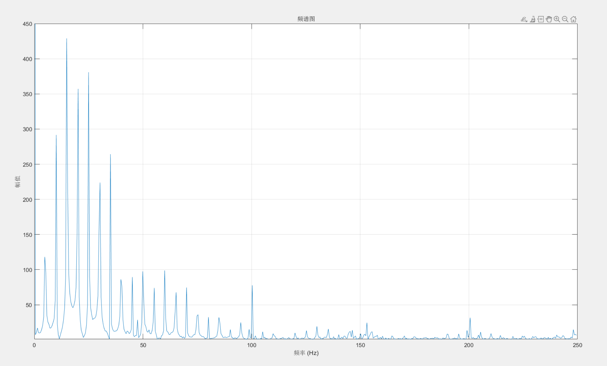
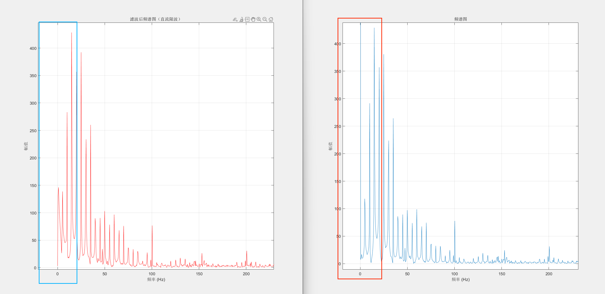
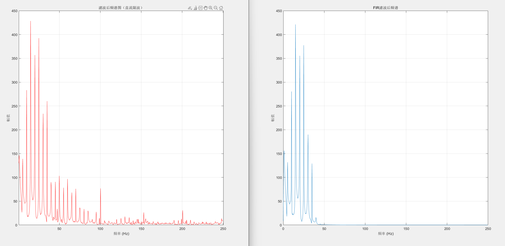
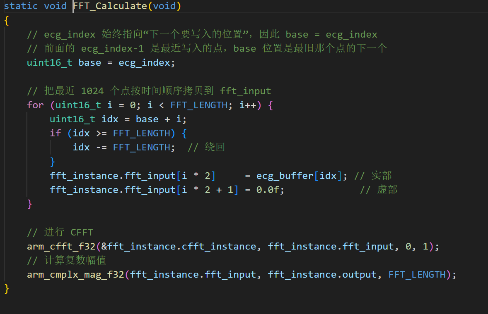
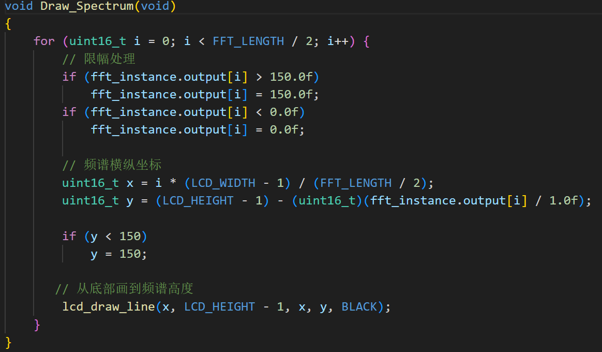
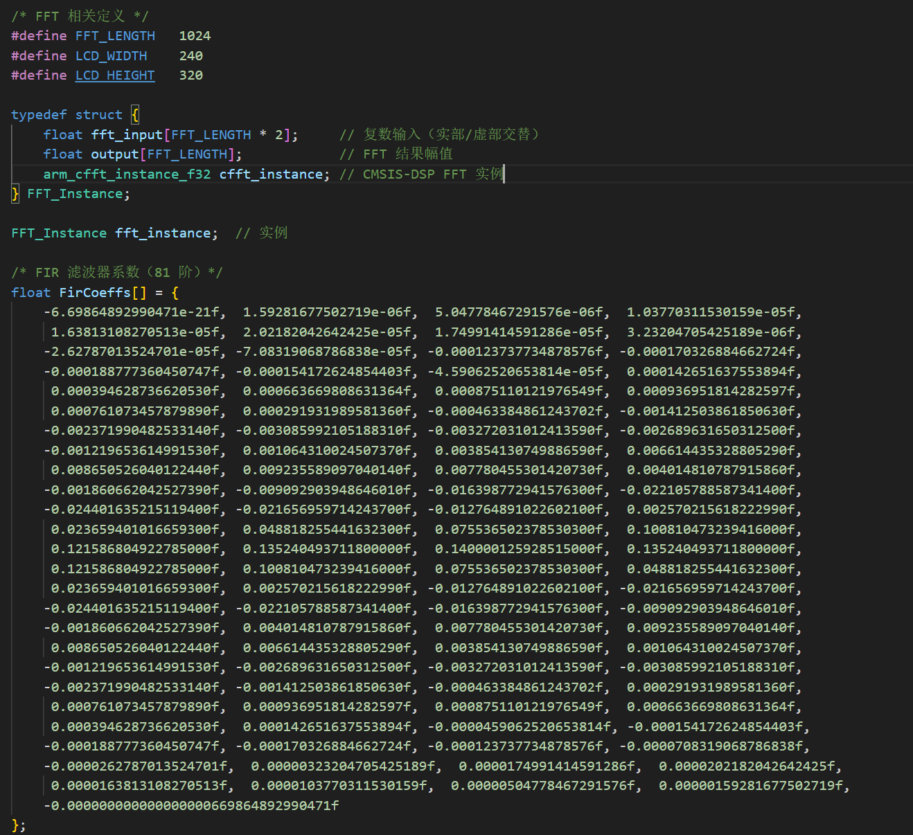
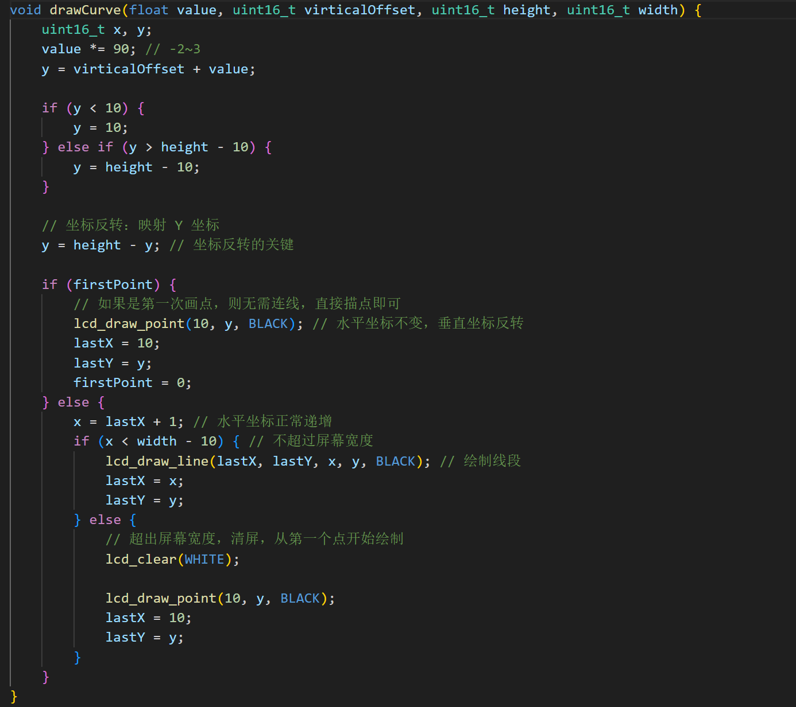

2020电赛C题——ADS1292R心电图检测仪
| 项目类型 | 信号与系统课程拓展项目 |
| 技术栈 | STM32F4, ADS1292R, SPI通信, CMSIS-DSP, MATLAB |
| 核心技术 | ADS1292R芯片SPI采集、FIR/IIR数字滤波、FFT频谱分析、 |
| Pan-Tompkins R波检测、LCD实时波形显示 | |
| 硬件平台 | STM32F407 + ADS1292R心电前端 + LCD显示屏 |
| 输入 | ECG心电信号（采样率500Hz, 24bit ADC） |
1 项目背景与需求
本项目设计并实现了一套完整的心电信号采集与处理系统，从硬件层的ADS1292R芯片SPI通信、到信号处理层的多级数字滤波、再到应用层的心率计算与LCD实时显示。项目要求：
- ADS1292R芯片通过SPI读取心电信号，能调用内部测试信号验证通信正确性
- 数字滤波处理：通带截止频率40Hz（衰减3dB）、阻带截止频率50Hz（衰减≥40dB）、采样频率500Hz
- 滤波后信号分析峰峰值、心率等特征
- 处理后的信号及心电特征实时显示在LCD屏幕上
- 能够采集人体真实ECG信号并显示
2 硬件系统——ADS1292R SPI通信
2.1 SPI通信协议
ADS1292R采用SPI全双工通信，STM32作为主设备，ADS1292R作为从设备。SPI接口使用4根信号线：MOSI、MISO、SCLK、CS。

2.2 ADS1292R硬件连接
ADS1292R传感器模块共12个输出引脚，关键连接如下：
| 引脚 | 功能 | 连接 |
|---|---|---|
| SPI\SCK | SPI时钟信号 | STM32 SPI\CLK |
| SPI\MISO | 数据输出（从→主） | STM32 SPI\MISO |
| SPI\MOSI | 数据输入（主→从） | STM32 SPI\MOSI |
| SPI\CS0 | 片选信号 | STM32 GPIO |
| ADS\DRDY | 数据就绪中断 | STM32 外部中断 |
| ADS\START | 开始采集 | STM32 GPIO |
| ADS\PWDN | 复位/掉电 | STM32 GPIO |
| +5V | 电源 | STM32 5V输出 |
2.3 ADS1292R数据读取
SPI读取ADS1292R的原始数据帧格式为：3字节状态 + 3字节通道1数据 + 3字节通道2数据，共9字节。24位有符号数需要扩展为32位：
// 发送读取数据命令
void ADS1292_ReadData(int32_t *ch1_data) {
uint8_t buff[10];
// 发送 RDATA 命令 (0x12)
ADS1292_SendCommand(CMD_RDATA);
// 读取 9 字节: 3字节状态 + 3字节CH1 + 3字节CH2
HAL_SPI_Receive(&hspi1, &buff[1], 9, 100);
// 提取通道1的24位数据 (高字节在前)
int32_t raw = ((int32_t)buff[4] << 16)
| ((int32_t)buff[5] << 8)
| ((int32_t)buff[6]);
// 24位有符号数扩展为32位 (补码符号位扩展)
if (raw & 0x800000) { // bit23 = 1 表示负数
raw |= 0xFF000000; // 高8位补1
}
*ch1_data = raw;
}
3 MATLAB算法验证
在部署到嵌入式平台之前，先在MATLAB环境中完成算法验证。
3.1 原始信号与频谱分析
将ADS1292R采集的原始信号通过串口导出为CH1.txt文件，在MATLAB中进行FFT频谱分析：

3.2 直流陷波处理
设计0Hz陷波器滤除直流分量：

3.3 FIR低通滤波器设计
根据设计指标（通带40Hz/3dB、阻带50Hz/40dB、采样500Hz），使用MATLAB filterDesigner工具设计FIR数字低通滤波器：
- 窗函数：Chebyshev窗（在给定窗口长度下提供最小主瓣宽度）
- 滤波器阶数：81阶（当前点及前80个点加权求和）
- 主要优势：频域主瓣振幅波动最小化，过渡带陡峭

4 STM32嵌入式实现
4.1 CMSIS-DSP FFT频谱计算
利用ARM CMSIS-DSP库实现1024点FFT频谱计算，在LCD上实时显示频谱：

cfft\f32" onclick="openLightbox(this)">
Spectrum" onclick="openLightbox(this)">4.2 FIR滤波器嵌入式部署
将MATLAB设计的81阶FIR滤波器系数导出为C数组，部署到STM32：

4.3 LCD实时心电波形绘制

5 信号处理链
ECG心电信号从原始采集到BPM输出的完整处理流程：
- 信号采集：ADS1292R通过SPI读取24位原始ECG数据，采样率500Hz
- 直流陷波：滤除0Hz直流分量（电极偏置电压）
- FIR低通滤波（0–40Hz）：81阶Chebyshev窗FIR，去除50Hz工频及高频噪声
- 50Hz工频陷波：二阶IIR陷波器进一步消除电网工频干扰
- Pan-Tompkins R波检测算法： [label=(alph*)]
- 五点差分：突出QRS波群的快速斜率变化
- 平方运算：增强大斜率区域，抑制小信号
- 滑动窗口积分：窗口宽度≈150ms，平滑包络轮廓
- 自适应双阈值检测：动态调整阈值，识别R波峰值位置
- BPM计算：统计相邻R波间隔计算实时心率
- LCD显示：实时绘制滤波后心电波形、频谱图、心率数值
6 Pan-Tompkins算法数学表达
五点差分（突出QRS斜率）：
平方增强：
滑动窗口积分（N ≈ 0.15 × fs）：
心率计算：
其中 overlineRR 为平均R-R间期采样点数，fs 为采样频率。
7 自适应阈值策略
Pan-Tompkins算法的关键在于自适应双阈值机制：
% 初始化阈值
SPKI = max(signal(1:2*fs)); % 信号峰值初始估计
NPKI = mean(signal(1:2*fs)); % 噪声峰值初始估计
THR1 = NPKI + 0.25*(SPKI - NPKI); % 检测阈值
THR2 = 0.5 * THR1; % 回搜阈值
R_peaks = [];
for i = 2:length(signal)-1
if signal(i) > signal(i-1) && signal(i) > signal(i+1)
if signal(i) > THR1
% 检测到R波
R_peaks = [R_peaks, i];
% 更新信号峰值估计
SPKI = 0.125*signal(i) + 0.875*SPKI;
else
% 更新噪声峰值估计
NPKI = 0.125*signal(i) + 0.875*NPKI;
end
% 动态更新阈值
THR1 = NPKI + 0.25*(SPKI - NPKI);
THR2 = 0.5 * THR1;
end
end
% 计算心率
RR_intervals = diff(R_peaks);
BPM = 60 * fs / mean(RR_intervals);
fprintf('心率: %.1f BPM\n', BPM);